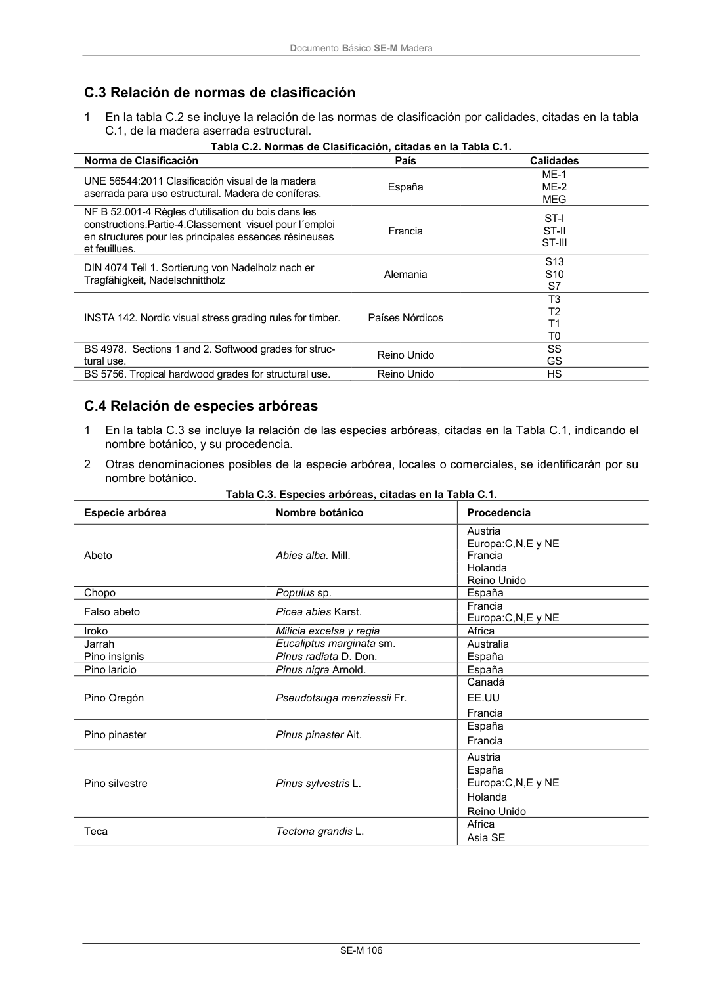

DB-SE-M · Página 112 · versión 2019-12-20
SHA256: 26b5819839ebfda78b0b119c5e76a0a37773b0d763c05688541870075df93718 · página física 112 de 132 · métodos de encabezado
solo si están cotejados.
Documento · ← p. 111 · p. 113 →
Formatos: Markdown · JSON de bloques · PDF p. 112 · imagen PNG
Documento Básico SE-M Madera SE-M 106 C.3 Relación de normas de clasificación 1 En la tabla C.2 se incluye la relación de las normas de clasificación por calidades, citadas en la tabla C.1, de la madera aserrada estructural. Tabla C.2. Normas de Clasificación, citadas en la Tabla C.1. Norma de Clasificación País Calidades UNE 56544:2011 Clasificación visual de la madera aserrada para uso estructural. Madera de coníferas. España ME-1 ME-2 MEG NF B 52.001-4 Règles d'utilisation du bois dans les constructions.Partie-4.Classement visuel pour l´emploi en structures pour les principales essences résineuses et feuillues. Francia ST-I ST-II ST-III DIN 4074 Teil 1. Sortierung von Nadelholz nach er Tragfähigkeit, Nadelschnittholz Alemania S13 S10 S7 INSTA 142. Nordic visual stress grading rules for timber. Países Nórdicos T3 T2 T1 T0 BS 4978. Sections 1 and 2. Softwood grades for struc- tural use. Reino Unido SS GS BS 5756. Tropical hardwood grades for structural use. Reino Unido HS C.4 Relación de especies arbóreas 1 En la tabla C.3 se incluye la relación de las especies arbóreas, citadas en la Tabla C.1, indicando el nombre botánico, y su procedencia. 2 Otras denominaciones posibles de la especie arbórea, locales o comerciales, se identificarán por su nombre botánico. Tabla C.3. Especies arbóreas, citadas en la Tabla C.1. Especie arbórea Nombre botánico Procedencia Abeto Abies alba. Mill. Austria Europa:C,N,E y NE Francia Holanda Reino Unido Chopo Populus sp. España Falso abeto Picea abies Karst. Francia Europa:C,N,E y NE Iroko Milicia excelsa y regia Africa Jarrah Eucaliptus marginata sm. Australia Pino insignis Pinus radiata D. Don. España Pino laricio Pinus nigra Arnold. España Pino Oregón Pseudotsuga menziessii Fr. Canadá EE.UU Francia Pino pinaster Pinus pinaster Ait. España Francia Pino silvestre Pinus sylvestris L. Austria España Europa:C,N,E y NE Holanda Reino Unido Teca Tectona grandis L. Africa Asia SE
